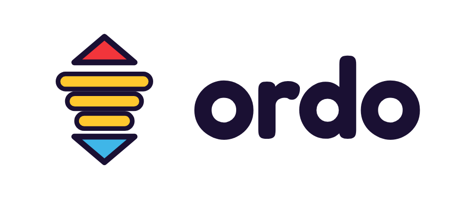
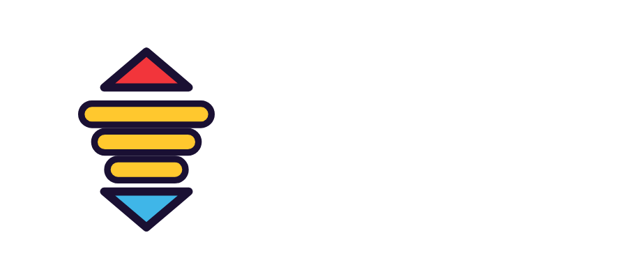
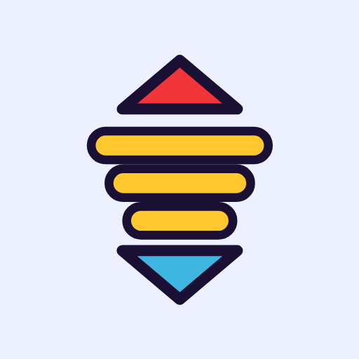

Writing about Ordo or putting it in a list? Everything you need is here. Use anything on this page freely.
Ordo is a free daily puzzle: put things in the right order before the clock runs out.
Ordo is a free daily ordering game. Each set shows a few things (planets, pop songs, animals, inventions) and a question: which is biggest, oldest, fastest? Drag or tap them into order before the clock runs out. Every five sets adds one more thing to sort. One run a day, the same puzzle for everyone, and a shareable result grid. It plays in any web browser, with no app, no ads and no sign-up.
Ordo is a daily puzzle about putting things in order. Each set gives you three to five things and a question: which came first, which is heaviest, which has the most people? You tap or drag them into place before the clock runs out. Sets start easy with ten seconds on the clock; the clock settles at seven seconds, and every five sets adds another item. Your score is how many sets you get through in a row.
There's one run a day and everyone gets the same puzzle, so friends can compare scores and challenge each other with a link to the same day's puzzle. Questions come from a bank of around 200 kinds of question across nearly 50 subjects, so no two days feel the same. There's a relaxed clock with its own leaderboard, and free play for practice.
Ordo Kids is a separate, picture-first version for ages 4 to 9, with questions read aloud and maths pitched by age. A pictures-only mode needs no reading or listening at all, for pre-readers and non-verbal children.
Ordo is free, with no ads and no sign-up. It is made in London by an independent developer.
| Name | Ordo (and Ordo Kids) |
|---|---|
| Website | ordogame.com · ordogame.com/kids |
| Genre | Daily puzzle, trivia, ordering |
| Launched | October 2026 |
| Platforms | Any web browser, phone or computer. Can be added to a phone's home screen like an app. |
| Price | Free. No ads, no sign-up, no in-app purchases. |
| A game takes | About 1 to 3 minutes |
| Questions | Around 200 kinds of question across nearly 50 subjects, growing every week |
| Ordo Kids | Ages 4 to 9. Read aloud. Pictures-only mode for pre-readers and non-verbal children. |
| Privacy | No accounts. Scores are linked to a random ID, not to a person. Ordo Kids keeps no lasting ID. |
| Made by | An independent developer in London |
| Contact | hello@ordogame.com |
Phone screenshots (1170 × 2532, iPhone size). Tap one to open it full size.
Vertical clips (1080 × 1920, no sound) and a short GIF.

Logo, for light backgrounds (PNG)
Logo, for dark backgrounds (PNG)
App icon (PNG, 512 px) App icon (SVG)Please write the name as Ordo (capital O) in text. The logo itself is lower case.
How Ordo works: a plain-English tour of how the puzzle is built.